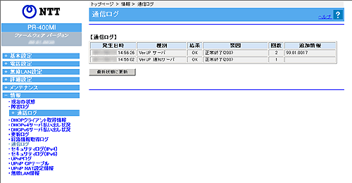

| 本商品と各サーバとの通信ログが表示されます。 | |
|
|
| ※「Web設定」画面に表示されているボタンについての説明は こちら | |
|  |
| ［通信ログ］ | ||
| 本商品と各サーバとの通信ログが表示されます。 ログは最新のものから順に最大100件表示されます。 時刻情報が取得できない場合には、本商品起動時点を0時とする相対時刻が表示されます。 時刻情報が取得できた場合には、絶対時刻が表示されます。 |
||
| 発信日時を表示します。 | |
| 通信種別を表示します。 | |
| 通信結果を「OK」か「NG」で表示します。 | |
| 通信結果に対する要因を、「正常終了」「通信失敗」等を用いて、表示します。すべて末尾にHTTP応答コードが表示されます。 | |
| 通信回数を表示します。 | |
| 追加情報として「MACアドレス」「ファームウェアバージョン」等を表示します。 | |